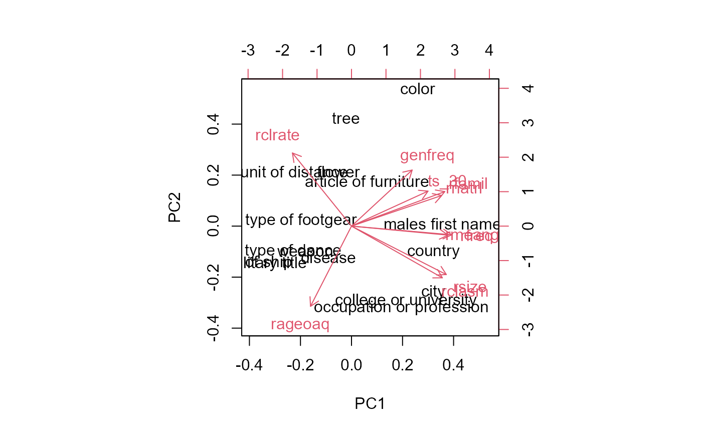

Joelson-Hermann Category Properties
CatProp.RdProperties of the 56 taxonomic categories from the Battig-Montague category norms published by Joelson and Hermann (1978).
Usage
data(CatProp)Format
A data frame with 56 observations on the following 24 variables.
catnumCategory number, a numeric variable
catnameCategory name, a character variable
rnatrlRated naturalness 1..7, a numeric variable
rfamilRated familiarity 1..7, a numeric variable
rmeangRated meaningfulness 1..7 (Hunt & Hodge, 1971), a numeric variable
rfreqRated frequency 1..7 B&M, a numeric variable
genfreqGenerated category label frequency, a numeric variable
rageoaqRated age of acquisition 1..10, a numeric variable
rsizeEstimated category size, a numeric variable
ts_30Mean # types produced in 30 seconds, a numeric variable
rclasmRecall asymptote, a numeric variable
rclrateRecall rate parameter, a numeric variable
tasTypes across subjects, a numeric variable
cortasCorrected types across subjects, a numeric variable
ntf# of types produced first, a numeric variable
nmngox# of dictionary meanings (Oxford), a numeric variable
nmngam# of dictionary meanings (Am. Heritage), a numeric variable
catfreqpcategory label K-F frequency, a numeric variable
rabconRated abstract-concreteness 1..7, a numeric variable
rvagprcRated vague-precise 1..7, a numeric variable
exfreqpAvg exemplar log K-F frequency, a numeric variable
intsamIntersample correlation, a numeric variable
maxfreqMaximum response frequency, a numeric variable
pagmtPercent agreement on category membership, a numeric variable
Details
Includes data for all 56 of the Battig-Montague categories from a preprint of
the Joelson-Hermann paper
Values for catfreqp were added for categories 3, 4, 8, 15, 24, 27,
32, 46, 47 & 56 from the Kucera-Francis norms, ignoring "part of", "unit of", and
taking max of labels connected by "or".
Source
Joelson, J. M. & Hermann, D. J. , Properties of categories in semantic memory, American Journal of Psychology, 1978, 91, 101-114.
Examples
data(CatProp)
summary(CatProp)
#> catnum catname rnatrl rfamil
#> 1 : 1 alcoholic beverage : 1 Min. :3.090 Min. :3.890
#> 2 : 1 article of clothing : 1 1st Qu.:4.088 1st Qu.:4.640
#> 3 : 1 article of furniture : 1 Median :4.875 Median :5.265
#> 4 : 1 bird : 1 Mean :4.809 Mean :5.224
#> 5 : 1 bldg for religious servic: 1 3rd Qu.:5.505 3rd Qu.:5.885
#> 6 : 1 carpenters tool : 1 Max. :6.250 Max. :6.510
#> (Other):50 (Other) :50
#> rmeang rfreq genfreq rageoaq
#> Min. :3.100 Min. :3.530 Min. : 0.00 Min. :2.020
#> 1st Qu.:3.560 1st Qu.:4.312 1st Qu.: 1.00 1st Qu.:4.450
#> Median :3.920 Median :4.765 Median : 9.50 Median :5.405
#> Mean :3.912 Mean :4.846 Mean : 19.54 Mean :5.243
#> 3rd Qu.:4.205 3rd Qu.:5.447 3rd Qu.: 30.25 3rd Qu.:6.077
#> Max. :4.550 Max. :6.110 Max. :150.00 Max. :8.060
#> NA's :25
#> rsize ts_30 rclasm rclrate
#> Min. : 6.98 Min. : 4.400 Min. : 9.80 Min. :0.005140
#> 1st Qu.:11.34 1st Qu.: 5.957 1st Qu.:19.05 1st Qu.:0.009155
#> Median :16.81 Median : 6.780 Median :22.30 Median :0.013315
#> Mean :22.19 Mean : 6.993 Mean :28.75 Mean :0.013471
#> 3rd Qu.:22.23 3rd Qu.: 7.388 3rd Qu.:32.33 3rd Qu.:0.016228
#> Max. :73.97 Max. :11.340 Max. :62.30 Max. :0.032430
#> NA's :28 NA's :28
#> tas cortas ntf nmngox
#> Min. : 61.0 Min. : 20.00 Min. : 10.00 Min. : 0.00
#> 1st Qu.:114.5 1st Qu.: 58.25 1st Qu.: 23.50 1st Qu.: 6.00
#> Median :161.0 Median : 98.50 Median : 30.50 Median :12.00
#> Mean :172.4 Mean :112.20 Mean : 35.77 Mean :13.50
#> 3rd Qu.:184.2 3rd Qu.:125.50 3rd Qu.: 47.25 3rd Qu.:17.75
#> Max. :486.0 Max. :400.00 Max. :104.00 Max. :49.00
#> NA's :26
#> nmngam catfreqp rabcon rvagprc exfreqp
#> Min. : 1.0 Min. : 0.0 Min. :3.260 Min. :3.550 Min. :0.420
#> 1st Qu.: 4.0 1st Qu.: 43.0 1st Qu.:4.765 1st Qu.:4.428 1st Qu.:1.260
#> Median : 7.0 Median : 88.0 Median :5.595 Median :5.030 Median :1.910
#> Mean : 7.2 Mean :150.1 Mean :5.366 Mean :4.938 Mean :1.928
#> 3rd Qu.:10.0 3rd Qu.:192.0 3rd Qu.:6.058 3rd Qu.:5.412 3rd Qu.:2.542
#> Max. :27.0 Max. :808.0 Max. :6.630 Max. :6.000 Max. :3.900
#> NA's :26 NA's :15
#> intsam maxfreq pagmt
#> Min. :0.0970 Min. : 40.0 Min. : 59.00
#> 1st Qu.:0.9477 1st Qu.:127.8 1st Qu.: 80.75
#> Median :0.9665 Median :189.5 Median : 86.00
#> Mean :0.9265 Mean :193.1 Mean : 85.70
#> 3rd Qu.:0.9842 3rd Qu.:242.0 3rd Qu.: 92.25
#> Max. :0.9970 Max. :387.0 Max. :100.00
#>
plot(CatProp[,3:10])
# try a biplot
CP <- CatProp
rownames(CP) <- CP$catname
biplot(prcomp(na.omit(CP[,3:12]), scale=TRUE))

# select some categories where the rated age of acquisition is between 2-4
cats <- pickList(CatProp, list(rageoaq=c(2,4)))
cats[,2:9]
#> catnum catname rnatrl rfamil rmeang rfreq genfreq rageoaq
#> 41 41 toy 4.84 5.67 NA 5.10 7 2.02
#> 48 48 flower 5.61 5.17 3.95 4.36 34 3.44
#> 10 10 color 6.15 6.21 4.44 5.89 64 2.87
#> 16 16 fruit 6.03 5.74 3.92 5.39 37 3.63
#> 8 8 four-footed animal 5.10 5.31 NA 5.75 7 3.94
#> 37 37 bird 5.21 4.90 3.56 4.65 23 3.57
#> 47 47 males first name 5.21 6.43 4.33 6.07 12 3.66
#> 52 52 fish 4.70 4.62 3.55 4.25 23 3.98
#> 31 31 article of clothing 5.95 6.18 4.55 5.62 150 3.80
#> 50 50 tree 5.67 5.21 3.85 4.41 78 3.54
# pick some fruit
pickList(subset(Battig, catname=="fruit"))
#> list word catnum catname syl letters freq frequency rank rfreq
#> 1057 1 raisin 16 fruit 2 6 16 1 26 6.83
#> 1040 1 grapefruit 16 fruit 2 10 154 3 9 6.25
#> 1038 1 cherry 16 fruit 2 6 183 6 7 5.41
#> 1049 1 prunes 16 fruit 1 6 44 1 18 7.33
#> 1045 1 lime 16 fruit 1 4 69 13 14 6.81
#> 1037 1 grape 16 fruit 1 5 247 3 6 5.28
#> 1046 1 tomato 16 fruit 3 6 63 4 15 5.00
#> 1035 1 banana 16 fruit 3 6 283 4 4 4.38
#> 1051 1 raspberry 16 fruit 9 3 28 1 20 6.69
#> 1059 1 nectarine 16 fruit 3 9 12 0 28 9.17